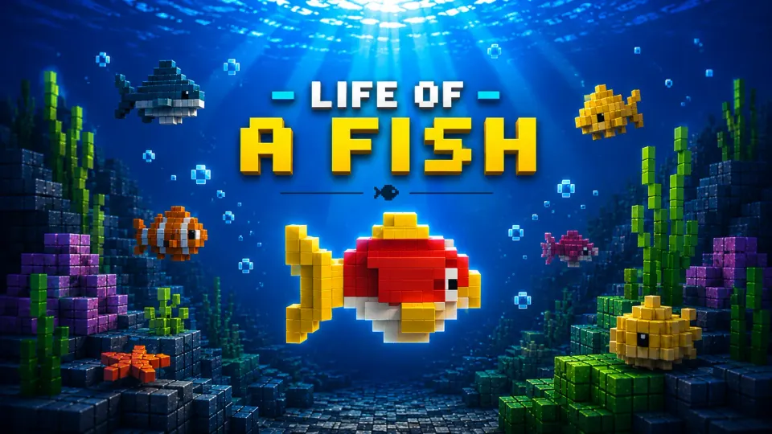
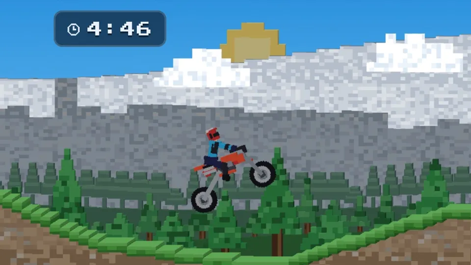

交互式演示
在画布上点击/拖动即可交互。请在下方选择一个演示。 物理 游戏
使用 nape-js 打造
已上线的游戏，物理均由 nape-js 驱动 —— 可在浏览器中试玩，也可下载原生版本。

Life of a Fish 像素风水下冒险：在洞穴中游动、冲刺与闪避，包含多阶段 Boss 战和每日下潜挑战。 loaf.newkrok.com →
MX Dash 侧视越野摩托街机：带真实悬挂的关节骑手、大跳、空翻与慢动作摔车回放。 mxdash.newkrok.com → Dust Kings 体素怪物卡车竞速：手工搭建的泥土赛道、快速比赛与每日挑战。目前处于封闭测试。 dustkings.newkrok.com →用 nape-js 做了作品？提交一个 issue，就有机会出现在这里。
为什么选择 nape-js？
nape-js 是少数几个同时提供刚体动力学、关节约束（PivotJoint、DistanceJoint、WeldJoint、AngleJoint、MotorJoint、LineJoint、PulleyJoint、SpringJoint）、流体浮力、断裂、基于约束网络构建的软体与布料、射线检测与凸形扫掠、内置角色控制器、用于多人回滚的确定性步进、二进制序列化、回放录制以及独立线程 Web Worker 桥接的 JavaScript / TypeScript 2D 物理引擎——作为单一 ESM 包发布（约 174 KB gzip），带有完整的 TypeScript 类型且零 DOM 依赖。
在寻找 Box2D、Matter.js、Planck.js 或 Rapier 的替代方案？运行浏览器内性能测试进行正面对比，或直接进入交互式示例——物理演示和可玩的小游戏（平台跳跃、MOBA、塔防、弹弓、弹珠台、俯视射击）。
为 AI 辅助开发而生
编程智能体最擅长处理那些可读取、可类型检查、并且能真正运行的库。nape-js 三者兼备。
已提供 llms.txt
完整 API 汇总为一个纯文本文件，位于 /llms.txt，另有完整参考文档 /llms-full.txt —— 这是把文档喂给模型的新兴标准。把 URL 交给你的智能体，无需抓取 HTML。
模型可信赖的类型
全程手写 TypeScript 并启用 strict: true，以生成的声明文件发布。智能体能拿到真实签名和悬停 TSDoc，从而更少臆造不存在的方法。
可在 Node 中无头运行
零 DOM 依赖：智能体可以导入引擎、推进模拟，并直接在终端断言结果 —— 无需浏览器、画布或任何 mock。
确定性，测试才站得住
设置 space.deterministic = true 后，同一平台上相同输入必得相同输出。智能体编写的回归测试会因为正确的原因保持绿色。
按任务组织的范例
实用手册按目标划分 —— 平台跳跃、布娃娃、流体、回放 —— 这正是提示词通常出现的形式。
性能测试
此刻正在你的浏览器中测量。每项测试都在紧凑循环中运行物理 step()，并报告每步的中位耗时。
按下按钮开始。